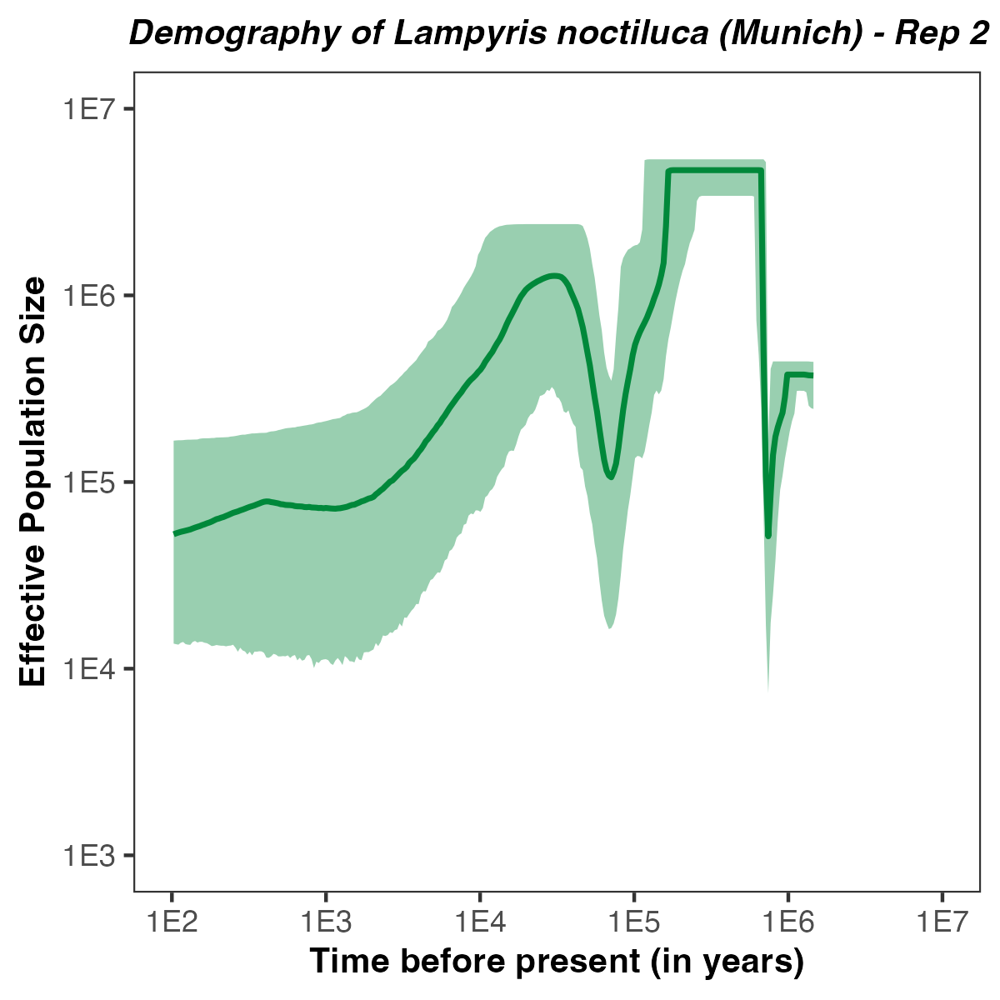

For your info
This tutorial and the included exercises are currently under construction. If you want to run the analyses, please compile
RevBayesfrom the dev_stairwayplot branch as described here (for the development branch). The code should hopefully be available in the next release (RevBayes v1.2.6).
Overview
This tutorial describes how to run a demographic analysis using the StairwayPlot approach (Liu and Fu 2015; Liu and Fu 2015) in RevBayes (Höhna et al. 2016).
The StairwayPlot approach assumes an underlying coalescent for a single panmictic population and an infinite sites model.
Population sizes are allowed to vary between coalescent events but assumed to be constant in between, thus producing the characteristic stairway shape.
As data, the StairwayPlot approach uses the site frequency spectrum (SFS), or allele frequency spectrum, and assumes that SNPs are unlinked, i.e., have their own coalescent history.
For a detailed description we refer the reader to Höhna and Catalán (2024).
The data for these analyses are taken from (missing reference).
More specifically, the data consists of a folded site frequency spectrum of the Munich population from the big European firefly Lampyris noctiluca.
Preparation
In order to perform the different analyses in this tutorial, you will need to create a directory on your computer for this tutorial and download a few files.
The Scripts
It is useful to create .Rev scripts for the different analyses.
We will also provide a full script in every tutorial that you can easily run for the whole analysis.
Please create a “scripts” directory in the tutorial directory.
The Data
The data for a StairwayPlot analysis are the site frequency spectrum.
For this tutorial, we assume that the site frequency spectrum was already computed.
We also refer to our own tutorial (currently in preparation) for obtaining an SFS from a VCF file.
In general, it is best to compute first the SFS so that it can be used efficiently in several analyses without extracting it each time from the VCF.
The SFS is simply specified as a vector of counts:
obs_sfs = [ 405017549, 1393598, 922300, 682542, 530181, 421015, 360546, 303107, 257549, 218569, 197952, 172446, 161453, 145816, 136546, 123085, 121036, 114119, 116561, 113349, 65829 ]
We obtained the data of the Munich population from the big European firefly Lampyris noctiluca from (missing reference), and you can see it plotted in . Here we use the folded site frequency spectrum from 20 diploid individuals, thus the size of the folded site frequency spectrum is 21 and the first entry represents the fixed sites.
We will also use some variables from the data, the number of haploid individuals N_IND and the total sequence length N_SITES
N_IND = 2*abs(obs_sfs.size()-1)
N_SITES = round(sum(obs_sfs))
Folding the SFS
If you have a full SFS but need to fold it, you can also easily do this in
RevBayes:tmp_sfs[1] <- obs_sfs[1] + obs_sfs[N_IND+1] for (i in 1:ceil(N_IND/2)) { if ( i != N_IND/2 ) { tmp_sfs[i+1] <- obs_sfs[i+1] + obs_sfs[N_IND-i+1] } else { tmp_sfs[i+1] <- obs_sfs[i+1] } } obs_sfs <- tmp_sfs
A Bayesian StairwayPlot Analysis
Initializing Global Variables
In our RevBayes scripts we need to use some global variables, specifically a vector for ‘moves’ and ‘monitors’.
Remember that moves are the operators/algorithms that propose and change the stochastic variables in a model based on the Metropolis-Hastings algorithm (Metropolis et al. 1953; Hastings 1970).
Monitors are used to either store samples of variables in files or print them to the screen.
The monitors give you the flexibility which variables to store into which file for specific post-processing.
moves = VectorMoves()
monitors = VectorMonitors()
Demographic Model (Prior on Population Sizes)
The different priors on the population sizes are the main feature of the Bayesian StairwayPlot compared with the Maximum Likelihood implementation (Liu and Fu 2020; Höhna and Catalán 2024). The StairwayPlot approach allows to specify one population size parameter for each interval between coalescent events, that is, for a dataset with n individuals (more specifically bins in the unfolded SFS, thus assuming haploid individuals) you can specify n-1 population size parameters. There are various different ways how to specify priors on population size parameters, and we will primarily focus here on the independent and identically distributed (iid) prior. Other options, such as the Gaussian Markov Random Field (GMRF) and the Horseshoe Markov Random Field (HSMRF) are provided as additional extensions.
The very first step is to initialize a multivariate-normal move (Baele et al. 2017). This move proposes new population sizes for the entire vector (all instead of a single parameter) based on a multivariate normal distribution. Since posterior samples of the population size parameters are likely to be correlated, either positively or negatively, this multivariate normal distribution learns first the correlation matrix in an initial learning phase by taking samples from the current MCMC.
avmvn = mvAVMVN(weight=50)
Next, we will specify each independent population size parameter. Remember that the StairwayPlot approach actually uses the parameters $\theta_{k} = 4\times N_{k}\times \mu$. Thus, we need to specify prior distributions on $\theta_{k}$ instead of $N_{k}$, and we will transform the $\theta$ later into effective population sizes $N$. In the simplest model, we will assume that each $\theta_k$ has a uniform prior distribution, $\theta_k \sim \text{Unif}(0,0.1)$, but any other prior that is defined for positive real numbers, such as the Exponential, Lognormal, and Gamma distribution.
# now specify a different theta per interval
for (k in 1:(N_IND-1)) {
# draw theta from a uniform prior distribution
theta[k] ~ dnUnif( 0.0, 0.1 )
# set a scaling move for this variable
moves.append( mvScale(theta[k], weight=5) )
avmvn.addVariable(theta[k])
}
In this for loop you saw how we specified the iid-uniform prior.
In some cases, it also might be helpful to specify starting values, for example with theta[i].setValue( 0.05 ).
You also should have noticed that we applied a scaling move (mvScale) for each $\theta_k$ parameter with a weight of 3, thus proposing on average 3-times a new value per MCMC iteration/cycle.
We also added each $\theta_k$ to our multivariate normal move, which we finally add to our vector of moves.
moves.append( avmvn )
As alternative prior distributions on the population size parameters, we provide several examples here. You can simply replace the part above with alternative priors.
Gaussian Markov Random Field (GMRF, first and second order)
The Gaussian Markov Random Field (GMRF) priors specify normal distributions as shrinkage priors on the population size parameters. The population size of the next interval is drawn from a normal distribution with mean being equal to the population size in the previous interval. Note that the variation depends on a global standard deviation parameter.
The entire code block including moves is given by:
avmvn = mvAVMVN(weight=100) log_theta_at_present ~ dnUniform(-20,2) log_theta_at_present.setValue( ln( 0.001 ) ) moves.append( mvSlideBactrian(log_theta_at_present,weight=5) ) avmvn.addVariable(log_theta_at_present) ## Global shrinkage parameter global_scale_hyperprior <- 0.021 # Global-scaled variances for hierarchical horseshoe global_scale ~ dnHalfCauchy(0,1) # Make sure values initialize to something reasonable global_scale.setValue(runif(1,0.005,0.1)[1]) # moves on the global scale moves.append( mvScaleBactrian(global_scale,weight=5.0) ) # now specify a different theta per interval for (i in 1:(N_IND-2)) { # non-centralized parameterization of horseshoe delta[i] ~ dnNormal( mean=0, sd=global_scale*global_scale_hyperprior ) # Make sure values initialize to something reasonable delta[i].setValue(runif(1,-0.1,0.1)[1]) # set a sliding move for this variable moves.append( mvSlideBactrian(delta[i], weight=5) ) avmvn.addVariable(delta[i]) if ( i > 1 ) { move_up_down_delta[i-1] = mvUpDownSlide(weight=3) move_up_down_delta[i-1].addVariable( delta[i], up=TRUE ) move_up_down_delta[i-1].addVariable( delta[i-1], up=FALSE ) moves.append( move_up_down_delta[i-1] ) } } # Assemble first-order differences and speciation_rate at present into the random field theta := fnassembleContinuousMRF(log_theta_at_present, delta, initialValueIsLogScale=TRUE, order=1) # joint sliding moves of all vector elements moves.append( mvVectorSlide(delta, weight=10) ) moves.append( avmvn )Note that you can switch between first and second order GMRF simply by specifying
order=1ororder=2infnassembleContinuousMRF(log_theta_at_present, delta, initialValueIsLogScale=TRUE, order=1)
Horseshoe Markov Random Field (HSMRF, first and second order)
The Horseshoe Markov Random Field (HSMRF) priors specify normal distributions as shrinkage priors on the population size parameters similar to the GMRF. However, instead of using a global standard deviation parameter, each interval receives its own standard deviation parameter. The entire code block including moves is given by:
avmvn = mvAVMVN(weight=100) log_theta_at_present ~ dnUniform(-20,2) log_theta_at_present.setValue( ln( 0.001 ) ) moves.append( mvSlideBactrian(log_theta_at_present,weight=5) ) avmvn.addVariable(log_theta_at_present) ## Global shrinkage parameter global_scale_hyperprior <- 0.021 # Global-scaled variances for hierarchical horseshoe global_scale ~ dnHalfCauchy(0,1) # Make sure values initialize to something reasonable global_scale.setValue(runif(1,0.005,0.1)[1]) # moves on the global scale moves.append( mvScaleBactrian(global_scale,weight=5.0) ) # now specify a different theta per interval for (i in 1:(N_IND-2)) { # non-centralized parameterization of horseshoe delta[i] ~ dnNormal( mean=0, sd=global_scale*global_scale_hyperprior ) # Make sure values initialize to something reasonable delta[i].setValue(runif(1,-0.1,0.1)[1]) # set a sliding move for this variable moves.append( mvSlideBactrian(delta[i], weight=5) ) avmvn.addVariable(delta[i]) if ( i > 1 ) { move_up_down_delta[i-1] = mvUpDownSlide(weight=3) move_up_down_delta[i-1].addVariable( delta[i], up=TRUE ) move_up_down_delta[i-1].addVariable( delta[i-1], up=FALSE ) moves.append( move_up_down_delta[i-1] ) } } # Assemble first-order differences and speciation_rate at present into the random field theta := fnassembleContinuousMRF(log_theta_at_present, delta, initialValueIsLogScale=TRUE, order=1) # joint sliding moves of all vector elements moves.append( mvVectorSlide(delta, weight=10) ) moves.append( avmvn )Note that you can switch between first and second order HSMRF simply by specifying
order=1ororder=2infnassembleContinuousMRF(log_theta_at_present, delta, initialValueIsLogScale=TRUE, order=1)
StairwayPlot Distribution
Now comes the main component of the Bayesian StairwayPlot analysis: the StairwayPlot distribution.
We implemented this distribution in simple but flexible way (Höhna and Catalán 2024) (note that we refer here to the likelihood in Höhna and Catalán (2024) to match exactly our implementation although the likelihood is, except for conditioning, the same as in Liu and Fu (2015)).
Our StairwayPlot distribution (dnStairwayPlot), which specifies the StairwayPlot likelihood (Höhna and Catalán 2024), comes with the following parameters:
- theta: The vector of $\theta$ parameters. This must be a vector of length n-1.
- numSites: The total sequence length, which should be the sum of the SFS. This is used for simulation/initialization and to compute the normalizing constant of the likelihood (Höhna and Catalán 2024).
- numIndividuals: The number of haploid individuals $n$. This again is used primarily for simulation/initialization and needs to match the size of the observed data.
- folded: Whether the data are folded or not (
TRUEorFALSE). - monomorphicProbability: Whether to compute the probability of monomorphic sites based on the rest of the probability (
rest) or on the tree length (treelength)? - coding: Whether we condition on have
allsites observed, or if we didn’t observe monomorphic sites (no-monomorphic), or if we also excluded singletons (no-singletons), i.e., singletons are merged together with monomorphic sites.
Several of these parameters have default values.
You can see some information using ?dnStairwayPlot.
Let us specify a variable sfs drawn from the dnStairwayPlot:
sfs ~ dnStairwayPlot( theta, numSites=N_SITES, numIndividuals=N_IND, folded=TRUE, coding="all" )
and attach/clamp our observed data to this variable
sfs.clamp( obs_sfs )
For post-processing and plotting purposes, we need some additional variables, for example the times when the population sizes changed and the effective population size.
We obtain the changepoint times as the expected coalescent times from our StairwayPlot distribution, thus using a member function of our variable sfs
times := sfs.getTimes()
Note that this variable is a deterministic variable and not a stochastic variable.
Next, we transform these times into actual times and actual effective population sizes. Therefore, we need to assume some mutation rate $\mu$ and some generation time.
mu = 2.8e-09
GEN_TIME = 2
Here we assume a mutation rate of $2.8e-09$ (taken from Heliconius melpomene (Keightley et al. 2015)) and a generation time of 2 years (missing reference). Now we can transform the theta
ordered_Ne := rev(theta) / 4.0 / mu
ordered_times := rev(times) / mu * GEN_TIME
We also want to store the expected site frequency from our model, to compute later the leave-one-out cross-validation score (Lewis et al. 2014; Lartillot 2023)
esfs := sfs.getExpectedAlleleFrequencies()
Putting it All Together
We have fully specified all of the parameters of our Bayesian StairwayPlot analysis.
Finally, we wrap the entire model in a single object to provide convenient access to the DAG.
To do this, we only need to give the model() function a single node.
With this node, the model() function can find all of the other nodes by following the arrows in the graphical model:
my_model = model(sfs)
Specifying Monitors and Output Files
The next step for our RevBayes analysis is to specify which variables to monitor and to which files to write them. We want the following monitors:
- One monitor that stores all variables of the model into a log-file (
mnModel). - One monitor that stores the vector of effective population sizes into a file (
mnFile). - One monitor that stores the change points of population sizes into a file (
mnFile). - One monitor that stores the expected SFS into a file (
mnFile). - One monitor that keeps us informed about the progress on the screen (
mnScreen). Overall, we specify that our monitors that write into our files will sample every 10 iterations, thus thinning the MCMC. We could also instead increase the weights of our moves.monitors.append( mnModel(filename="output/StairwayPlot_iid.log", printgen=10) ) monitors.append( mnFile(ordered_Ne, filename="output/StairwayPlot_iid_ordered_Ne.log", printgen=10) ) monitors.append( mnFile(ordered_times, filename="output/StairwayPlot_iid_ordered_times.log", printgen=10) ) monitors.append( mnFile(esfs, filename="output/StairwayPlot_iid_esfs.log", printgen=10) ) monitors.append( mnScreen(printgen=1000) )
Initializing and Running the MCMC Simulation
Now we are ready to run our MCMC simulation.
The first step is to create the MCMC object.
There, we need our model object, our moves vector and our monitors vector.
Additionally, we need to specify how many MCMC replicates we perform.
Here we perform 4 replicates to check for convergence and reproducibility.
We also need to specify whether and how to combine the log-files of the separate replicates.
my_mcmc = mcmc(my_model, monitors, moves, nruns=4, combine="mixed")
Next, we will run both a pre-burnin phase of 10,000 MCMC iterations, and the actual MCMC simulation with 100,000 iterations. During the pre-burnin, our monitors will not sample value to the files. This is mostly done to tune the moves (we tune them here automatically every 100 iterations) and to move from random or fixed starting values to (hopefully) random samples from the stationary posterior distribution.
my_mcmc.burnin( generations=10000, tuningInterval=100 )
my_mcmc.run( generations=100000, tuningInterval=200 )
After the MCMC is finished, we can check the acceptance rates of our moves to inspect the MCMC performance.
my_mcmc.operatorSummary()
Model Testing: Leave-one-out cross-validation
The next step of our analysis is to compute the leave-one-out cross-validation score (Lartillot 2023).
The LOO-CV gives the probability of observing the data under the model after the parameters have been trained to the data.
That is, the LOO-CV gives a prediction of the overall model fit to the data and is more powerful than conventional Bayes factors (Lartillot 2023).
We compute the LOO-CV from the conditional posterior ordinates (Lewis et al. 2014; Lartillot 2023).
Thus, we create a ConditionalPosteriorOrdinate object with the expected SFS read from our log files for each of the 4 MCMC replicates.
Then, we compute the LOO-CV given the actual observed SFS.
for (i in 1:4) {
cpo = ConditionalPosteriorOrdinate( filename="output/StairwayPlot_iid_esfs_run_"+i+".log" )
pred_prob = cpo.predictiveProbability( obs_sfs, log=FALSE )
"predictive probability"
pred_prob
}
Finish your RevBayes script and run this Bayesian StairwayPlot analysis with the iid prior on population sizes.
The Figures
The R package RevGadgets provides functionality for plotting RevBayes results.
In each exercise, you can plot the population size trajectories resulting from the different analyses.
If you want to plot the results from the exercises, please create a “figures” directory in the tutorial directory and install the
RpackageRevGadgets.
Here is a code example how to plot the demographic history for each replicate separately.
Since RevGadgets returns ggplot2 objects, you can easily modify the output to your liking.
library(RevGadgets)
library(ggplot2)
burnin = 0.1
probs = c(0.025, 0.975)
summary = "median"
x.lim <- c(1E2,1E7)
y.lim <- c(1E3,1E7)
num_grid_points = 500
for (run in 1:4) {
population_size_log = paste0("output/StairwayPlot_iid_ordered_Ne_run_",run,".log")
interval_change_points_log = paste0("output/StairwayPlot_iid_ordered_times_run_",run,".log")
df <- processPopSizes(population_size_log, interval_change_points_log, burnin = burnin, probs = probs, summary = summary, num_grid_points = num_grid_points)
p <- plotPopSizes(df) +
ggtitle( paste0("Demography of Lampyris noctiluca (Munich) - Rep ", run ) + theme(plot.title = element_text(hjust = 0.5, size=10, face="bold.italic")) +
xlab("Time before present (in years)") + theme(axis.title.x = element_text(size=10, face="bold")) +
scale_x_continuous(trans='log10', limits = x.lim, breaks=c(1E2,1E3,1E4,1E5,1E6,1E7), labels=c("1E2","1E3","1E4","1E5","1E6","1E7")) +
ylab("Effective Population Size") + theme(axis.title.y = element_text(size=10, face="bold")) +
scale_y_continuous(trans='log10', limits = y.lim, breaks=c(1E2,1E3,1E4,1E5,1E6,1E7), labels=c("1E2","1E3","1E4","1E5","1E6","1E7"))
ggplot2::ggsave(filename=paste0("figures/StairwayPlot_iid_",run,".pdf"), plot=p, width=4, height=4)
}


Exercises
As an exercise, try different models, such as the GMRF, GMRF2, HSMRF and HSMRF2.
- Baele G., Lemey P., Rambaut A., Suchard M.A. 2017. Adaptive MCMC in Bayesian phylogenetics: an application to analyzing partitioned data in BEAST. Bioinformatics. 33:1798–1805.
- Höhna S., Landis M.J., Heath T.A., Boussau B., Lartillot N., Moore B.R., Huelsenbeck J.P., Ronquist F. 2016. RevBayes: Bayesian Phylogenetic Inference Using Graphical Models and an Interactive Model-Specification Language. Systematic Biology. 65:726–736. 10.1093/sysbio/syw021
- Hastings W.K. 1970. Monte Carlo Sampling Methods Using Markov Chains and Their Applications. Biometrika. 57:97–109.
- Höhna S., Catalán A. 2024. The Bayesian StairwayPlot for Inferring Single Population Demographic Histories from Site Frequency Spectra. in review.
- Keightley P.D., Pinharanda A., Ness R.W., Simpson F., Dasmahapatra K.K., Mallet J., Davey J.W., Jiggins C.D. 2015. Estimation of the spontaneous mutation rate in Heliconius melpomene. Molecular biology and evolution. 32:239–243.
- Lartillot N. 2023. Identifying the best approximating model in Bayesian phylogenetics: Bayes factors, cross-validation or wAIC? Systematic Biology. 72:616–638.
- Lewis P.O., Xie W., Chen M.-H., Fan Y., Kuo L. 2014. Posterior predictive Bayesian phylogenetic model selection. Systematic biology. 63:309–321.
- Liu X., Fu Y.-X. 2015. Exploring population size changes using SNP frequency spectra. Nature genetics. 47:555–559.
- Liu X., Fu Y.-X. 2020. Stairway Plot 2: demographic history inference with folded SNP frequency spectra. Genome biology. 21:280.
- Metropolis N., Rosenbluth A.W., Rosenbluth M.N., Teller A.H., Teller E. 1953. Equation of State Calculations by Fast Computing Machines. Journal of Chemical Physics. 21:1087–1092. 10.1063/1.1699114